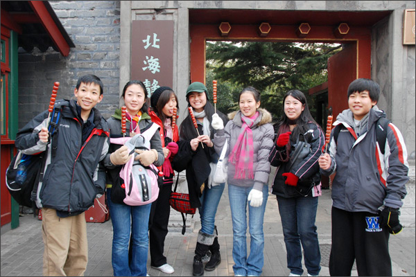

iTalkBB中国寻根之旅实录将在凤凰卫视首播
(美國弗吉尼亞州維也納訊)
隨着中國經濟力量與國際地位的提升，今日華裔子弟在美國長大的生活要比數十年前改變了許多。
華裔家長平時很努力地灌注中華文化與語言到他們孩子的身上。然而，孩子一旦踏出家們，整個英語環境為孩子們學習他們本身的根源文化形成了一定的困難。如何能夠讓華裔孩子正確地認知中美不同的文化，對自己有一個正確的定位，接着從這種特殊的生長環境中真正地得益，成為了家長們的一個難題。
周末提供課程的中文學校在全美各地越來越多，其中全美中文學校協會(CSAUS) 擁有來自橫跨全國42州，三百多個會員學校，超過6萬名學生，以及5千位老師。很多華裔家長選擇了讓他們的孩子進入這樣的語言學校學習中文。但是要更加全面地了解中華文化，單純地學習語言是不夠的。
去年，全美中文學校協會和企業贊助商iTalkBB家庭電話所舉辦的全美青少年中文作文比賽，提供8位在美國長大的華裔學生一趟由iTalkBB全額贊助的中國尋根之旅。其中有6位得獎學生是由五位分別來自於全美中文學校協會、iTalkBB、及三家享有盛名的中文媒體-北美新浪、美國鳳凰衛視，與世界日報的評審委員。其它的2位學生則是經由民眾在其主題網站上投票選出的。
"我們想提供這些華裔年輕人一個以寫作來表現自己的機會，我們知道這趟去中國的尋根之旅，可以真正地改變他們對自己身為一個華裔美國人的看法"，iTalkBB首席執行官趙捷指出。
孩子們可能常聽見家長們談論身為一個中國人的重要性，除非他們親身經歷，他們是很難去了解的。
以下是參加iTalkBB中國尋根之旅的八位孩子在中國的日記精選，從中，希望可以讓廣大的讀者了解孩子們在中國的真實感受。
爸爸媽媽的話忽然從腦海中冒出來："你有了這個機會回國，一定要好好的去尋根，去深刻地感受中國文化。"可我一直不懂該怎麼樣去體會那種感覺……我從小到大隻知道坐飛機能夠去一個叫中國的國家，但我這次的尋根也許可以明白爸爸媽媽話里隱藏着的意義，還有理解他們心裡念着家的負擔。(12/26/08 - 湯簡)
在七天內，遇見了很多不同的人，遇見了很多不同的事情，也學到了不少從沒聽說過的中國歷史以及文化。這次的尋根之旅讓這一個寒假變成最有意義的一個寒假。(1/1/09 - 林瑤)
更多日記內容請上 www.2008HeritageTour.com 閱讀。
鳳凰衛視在3月22日和3月29日太平洋時間的下午6點25分 (東部時間9點25分) 將分成上下兩集，分別播出這8位學生參訪四川大地震後新建學校的精采片段。記得帶上您的孩子一起觀看！
關於全美中文學校協會：
全美中文學校協會是 (501) (C) (3)的非營利組織。此協會的目的在於強化美國中文學校間的合作，並推廣中文以及中華文化的教育，以及加強中國與美國間文化的合作及交流。
關於 iTalkBB：
iTalkBB新電信是享譽全美的優秀通訊品牌，是國際電訊行業的領導和先驅。其以頂級全球網絡和前沿技術為依託，以最具競爭力的價格為客戶提供高質、清晰的本 地、國內及國際長途電話服務，以及高清中文電視直播、回播與點播服務。其電話業務能完全取代傳統家庭電話，並享受多重免費提供的附加功能如來電等待、三方通 話、來電顯示、呼叫轉移等。另有獨一無二的功能——中國大陸、台灣、香港、南韓當地號碼，當地親友只要撥打此號碼，就能接通到在美國的親友，而無需支付國際 長途費用 。iTalkBB的高清中文電視服務，自問世以來便受到了廣泛的好評和歡迎。超過五十個熱門頻道支持實時直播與48小時回看，海量最新電影電視劇綜藝節目免 費無限點播，讓用戶以最低價格盡享華語娛樂。iTalkBB新電信將不斷努力，與您共同成就更美好的生活。iTalkBB設有24小時中英文的客戶服務熱線: 1-877-482- 5522和官方網站www.iTalkBB.com，一年365天提供不間斷的服務與更多信息的查詢。